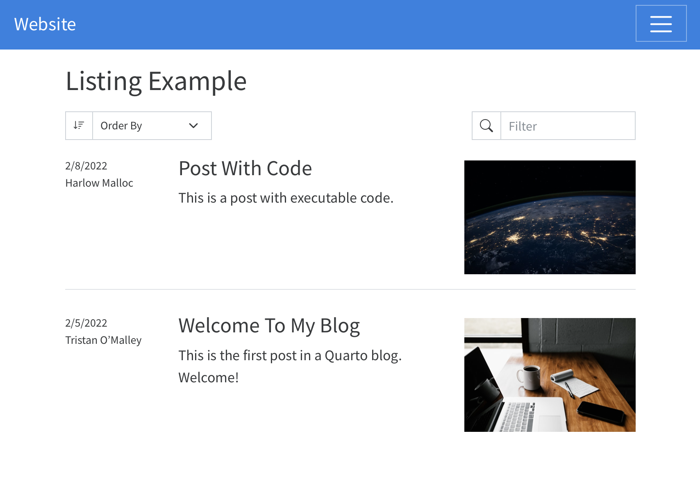
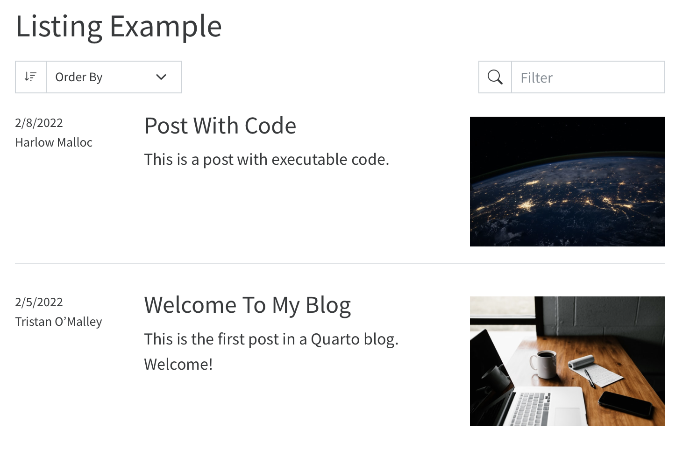
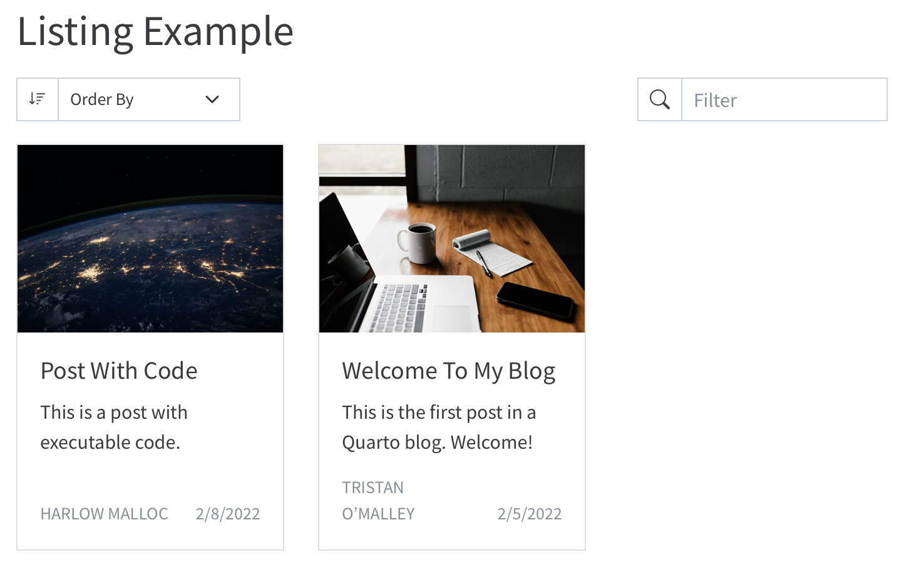
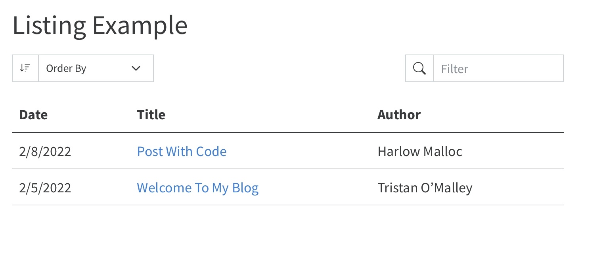
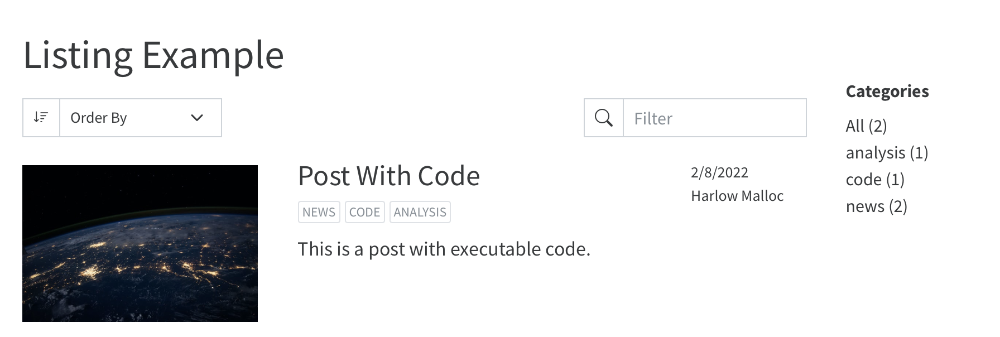
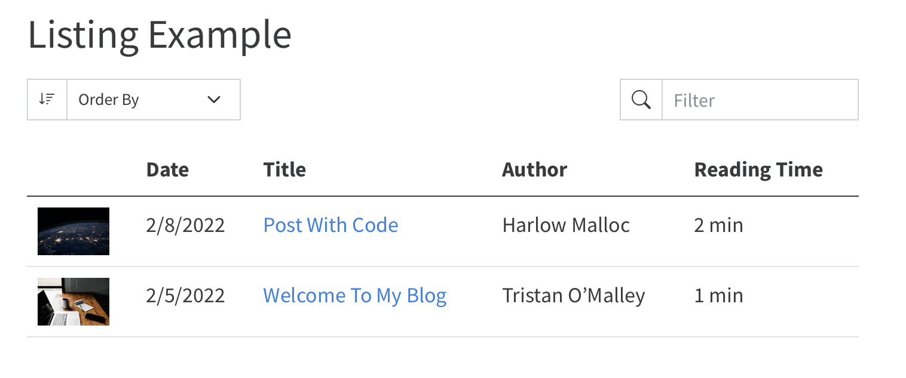
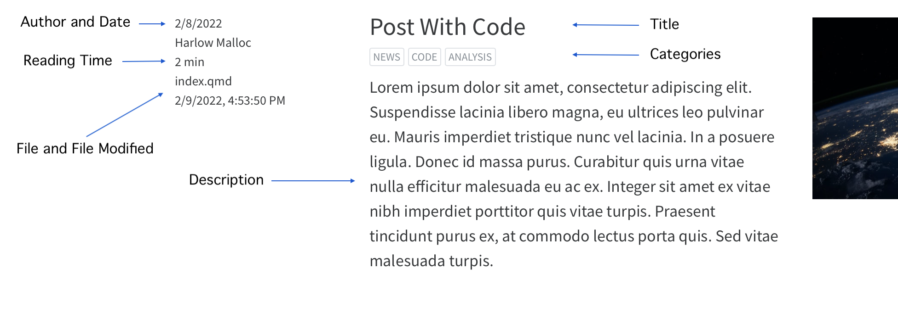
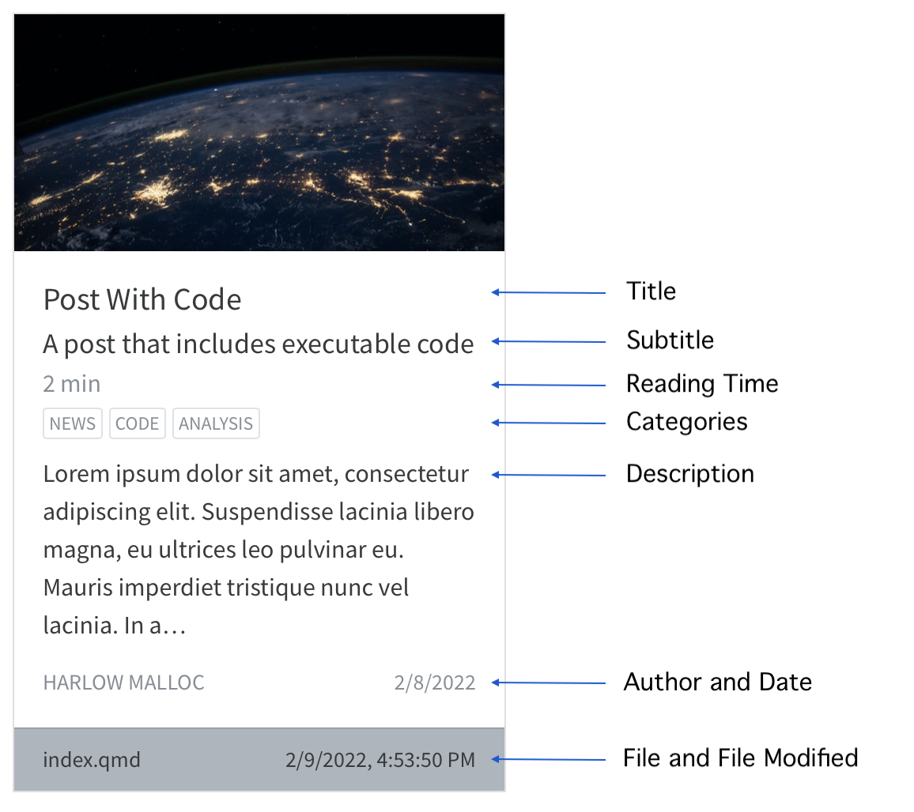
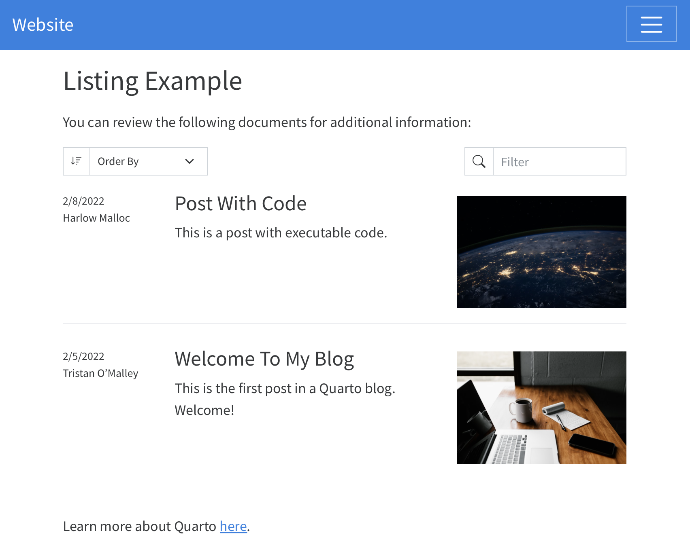

Document Listings
Overview
Listings enable you to automatically generate the contents of a page (or region of a page) from a list of Quarto documents or other custom data.
Listings are useful for creating blogs, providing navigation for large numbers of documents, or any other scenario where you’d like the contents of a page to be automatically updated as documents are added, updated, and removed.
You can enable listings on a page using the listing option in the document front matter. This will instruct Quarto to generate additional content (the ‘listings’) when the page is rendered. For example, the following YAML in the front matter of a document:
---
title: "Listing Example"
listing: default
---will result in a listing of all documents in the directory (with the exception of the current document). It might look something like this:

Listing Contents
You can control what documents are included in the listing by using the contents option, which allows you to provide a set of input files (or globs of input files) that should be included in the listing. For each of the inputs that matches the contents of a listing, an item will be included using the metadata in the front matter of the document.
To have an item in the list, it must contains at least the “title” metadata.
For example to include all the Quarto documents in the posts directory, you would write:
---
title: "Listing Example"
listing:
contents: posts
---You can write much more complex rules for including content by using globs and using a list of targets in the contents, such as:
---
title: "Listing Example"
listing:
contents:
- "reports/*.qmd"
- "lab-notes/*reports.qmd"Review the Quarto Glob Reference for more information about supported glob syntax.
If you provide a path to a directory, it will be treated as <directory>/** - the directory will be searched recursively for project inputs.
It is important to note that when providing a list of targets, these will be identified relative to the location of the listings page, not the root of the project file. For example, if your listings page is located at /pages/listings.qmd specifying contents: "reports/*.qmd" will search in /pages/reports/ not /reports/ for the targeted files.
In addition to specifying lists of files or globs, contents can contain lists of metadata as well. For more about this, see Custom Listings.
Listing Types
There are three built-in types of listings that you can choose from. Use the type option to choose the appearance of the listing:
---
listing:
contents: posts
type: default
---The type field accepts the following values:
| Type | Description |
|---|---|
default |
A blog style list of items. |
table |
A table of listings. |
grid |
A grid of listing cards. |
By default, listings will appear in full width rows that display the item’s metadata (author and date), title, description, and image.

Grid style listings display a card for each item.

The table listing style provides a traditional tabular layout.

Sorting Items
By default, listings created from documents will be ordered by their title. Use the sort option to control the order of the listing. For example:
listing:
contents: posts
sort: "date"Each sort key can include a field name and optionally either asc or desc to control whether to sort in ascending or descending order. When only the name is specified, sorting by that field will be in ascending order.
The sort key can also contain one or more fields to sort by. For example:
listing:
contents: posts
sort:
- "date"
- "title desc"This will sort the documents in the posts directory first by their date in ascending order, then by their title in descending order.
If you’d like to disable sorting entirely and display the items in the order in which they are specified, you can pass sort: false (which will disable sorting and preserve the item’s original order).
Listing Options
It is possible to customize the appearance of listings using the following options for each type of listing display.
Default
Option
|
DescriptionThe maximum number of items to include in this listing. |
|
image-align |
Whether to place the image on the right or left side of the post content. Defaults to right. |
|
image-height |
The height of the image being displayed. The width is automatically determined and the image will fill the rectangle without scaling (i.e. cropped to fill). | |
image-placeholder |
The default image for items if they have no image. | |
Grids
Option
|
DescriptionThe maximum number of items to include in this listing. |
|
image-height |
The height of the image being displayed. The width is automatically determined and the image will fill the rectangle without scaling (i.e. cropped to fill). | |
image-placeholder |
The default image for items if they have no image. | |
grid-columns |
The number of columns in the grid display. Defaults to 3. | |
grid-item-border |
Whether to display a border around the item card. Defaults to true. |
|
grid-item-align |
Aligns the content within the card (left, right, or center). Defaults to left. |
|
Tables
Options
|
DescriptionThe maximum number of items to include in this listing. |
|
image-height |
The height of the image being displayed. The width is automatically select and the image will fill the rectangle without scaling (i.e. cropped to fill). | |
image-placeholder |
The default image for items if they have no image. | |
table-striped |
Display the table rows with alternating background colors (true or false). Defaults to false |
|
table-hover |
Highlight rows of the table when the user hovers the mouse over them (true or false). Defaults to false. |
|
field-links |
A list of fields that should link to the document in the table (defaults to title). |
|
Advanced Options
| Option | Description |
|---|---|
field-display-names |
A mapping that provides display name for specific fields. For example, to display the title column as ‘Report’ in a table listing you would write: |
max-description-length |
The maximum length of the description displayed in the listing (in characters). Defaults to 175. |
date-format |
The date format to use when displaying dates (e.g. You may either provide a date style (
Learn more about supported date formatting values here. |
In addition to the above listing-wide options, each listing type has a variety of options to customize its appearance.
Categories
In addition to displaying the listing contents, listings can also automatically add a list of categories to the page that they appear on. To enable categories you can set the categories option like:
listing:
categories: truewhich results in categories appearing in the right sidebar:

When users click a category, the page will be updated to show only the listing items that match the selected category.
Category Appearance
You can choose between a few different display styles for categories:
| Option | Description |
|---|---|
numbered |
Displays a list of categories in alphabetical order with the number of items in that category displayed next to the category name. |
unnumbered |
Display a list of categories in alphabetical order. |
cloud |
Displays a ‘word cloud’ of categories. |
When multiple listings appear on the page, categories will be enabled based upon the option set in the first listing. If categories are enabled for the first listing, all listings on the page will contribute their item categories to the list of categories and all will be filtered when the user clicks a category.
Feeds
You can also have an RSS feed generated based upon the contents of a listing. This is great to allow your content to be syndicated or to be accessible via RSS Readers. Include a feed for your listing by including the feed option:
listing:
contents: posts
feed: trueWhen a feed is enabled for a listing on a page, an RSS file will be automatically generated using the name of the the file. For example, index.qmd will produce a feed at index.xml. A link to the feed will be included in the head of the page as well.
Generating feeds requires that the site-url be set for the site in your _quarto.yml file. For example:
website:
site-url: "https://www.quarto.org"You can further customize your feed using the following options:
| Option | Description |
|---|---|
items |
The number of items to include in your feed. Defaults to 20. |
type |
full, partial or metadata. full, the default, includes the full contents of each document in the feed. partial includes the description, if available, otherwise the first paragraph in the feed. metadata includes only the title, description, and other document metadata in the feed. |
title |
The title for this feed. Defaults to the site title provided in your _quarto.yml file. |
image |
The image for this feed. If not specified, the image for the page the listing appears on will be used, otherwise an image will be used if specified for the site in your _quarto.yml file. |
description |
The description of this feed. If not specified, the description for the page the listing appears on will be used, otherwise the description of the site will be used if specified in your _quarto.yml file. |
language |
The language of the feed. Omitted if not specified. See https://www.rssboard.org/rss-language-codes for a list of valid language codes. |
categories |
Generates a separate feed for each of the categories included in this list of category names. |
Listing Fields
When reading the contents of a listing, Quarto uses the metadata read from the front matter of the document or the contents of the document itself to populate the following fields for each item:
| Field Name | Description |
|---|---|
title |
The title of the item, read from the title field of the front matter (or the first H1 of the document). |
subtitle |
The subtitle of the item, read from the subtitle field of the front matter. |
author |
The author of the item, read from the author field of the front matter. |
description |
The description of the item, read from the description or abstract field of the front matter or from the first paragraph of the document. |
date |
The date of the item, read from the date field of the front matter. |
image |
The image for this item, read from the image field of the front matter, or automatically discovered by taking the first of an image of class preview-image, an image with a file name starting with feature, cover, or thumbnail, or the first image to appear in the document. |
image-alt |
The alt text for the image for this item. |
word-count |
A word count for this item. |
reading-time |
An estimate of the reading time for this item, computed by counting the words in the item and assuming a reading speed of 200 words per minute. |
categories |
Categories for the item, read from the categories field of the front matter. |
filename |
The name of the input file. |
file-modified |
The last modified date of this input file. |
Depending upon the type of listing that you are using, different fields are displayed automatically:
| Field | Type: Default | Type: Table | Type: Grid |
|---|---|---|---|
title |
x | x | x |
subtitle |
x | ||
author |
x | x | x |
description |
x | x | |
date |
x | x | x |
image |
x | x |
Customizing Fields
Though specific columns are displayed by default, each of the types will allow you to display any of the above columns by using the fields options. For example, to display more fields in a table (as columns), you write:
listing:
type: table
contents: posts
fields: [image, date, title, author, reading-time]which produces:

Each type of listing will handle the fields in different ways.
- Default
-
For default type listings, the various fields will be placed logically, with the
imagein the right column, thetitle,subtitle, anddescriptionin the center column, and any other fields in the left column.
- Tables
-
For table type listings, the list of fields will be displayed as columns in the order that the fields appear in the list.
- Grid
-
For grid listings, the
image,title,subtitle,reading-time,categories,description,author, anddatefields will be arranged on the body of the card. Thefilenameandfile-modifiedfields will appear in the card footer. Any other fields will appear in a table at the bottom of the card body.
Including or Excluding Items
You can control what documents are included or excluding based upon the metadata of the items by using the include and exclude options. These options allow you to specify one or more field names and values that must be present or absent in order for the item to be included or excluded. For example, to include only items authored by Harlow or Tristan, you write:
listing:
contents: posts
type: grid
include:
author: "{Harlow,Tristan}*"To exclude any items authored by Charles, you write:
listing:
contents: posts
type: grid
exclude:
author: "Charles*"When including or excluding items based upon a string field value, Quarto will use glob syntax when comparing values. Any other type of comparison will be done by testing for equality.
User Tools
Listings support interactive tools to allow the viewer of the listing to sort, filter, or page through listings.
Sorting
Users can use the select box to choose how to sort the items in the listing (or in the case of tables, by clicking on the column headings). By default, the sorting control will allow the user to sort by title, date, or author. You can stop this UI from being displayed to the user with the option:
listing:
sort-ui: falseYou can control which fields are included in the sort list by providing a list of field names in the sort-ui key:
listing:
sort-ui: [title, date]Filtering
Listings include a filter box positioned on the top right of the listing content. The filter box allows readers to perform a ‘typeahead’ search of the listing contents. You can disable the filtering control using the option:
listing:
filter-ui: falseBy default, if the filtering control is enabling, all fields that are being displayed in the listing will be searchable. If you’d like to limit searching / filtering to specific fields, you can do so by providing a field list in the filter-ui key:
listing:
filter-ui: [title, date]Pagination
Listings also natively support pagination of the items. The default number of items displayed on a page depends up the listing type:
| Listing Type | Items Per Page |
|---|---|
default |
25 |
table |
30 |
grid |
18 |
You can control the number of items displayed per page using the option page-size:
listing:
page-size: 36Listing Location
By default, listings will simply be appended to the main content region of the page. If you’d like to control where a listing appears, set an id for that listing and use that id on a corresponding div in the page. For example, updating the page used in the previous example to this:
---
title: "Listing Example"
listing:
id: sample-listings
contents: posts
sort: "date desc"
type: table
---
You can review the following documents for additional information:
::: {#sample-listings}
:::
Learn more about Quarto [here](https://www.quarto.com).Results in a listing page like:

Multiple Listings
You can place any number of listings on a single page. The following would populate two listings on a single page:
---
title: Team Documents
listing:
- id: lab-reports
contents: "lab-reports/*.qmd"
type: table
- id: meeting-notes
contents: "meeting-notes/*.qmd"
type: table
---
## Lab Reports
:::{#lab-reports}
:::
## Meeting Notes
:::{#meeting-notes}
:::YAML Listing Content
In addition to populating a listing with inputs that match one or more globs, you can also provide items explicitly via a YAML file. For example, the following listing:
---
title: "Listing Example"
listing:
id: sample-listings
contents:
- posts
- archived-items.yaml
sort: "date desc"
type: table
---will include all the documents in the posts directory, but will also merge in the contents of the archived-items.yaml file. The contents of the archived-items.yaml file should be a list of items, each of which is a map of field names to values. For example:
- title: "Archived Item 1"
author: Norah Jones
date: 2020-01-01
path: "archived/archived-item-.html"
categories: [archived, technology]This is useful for cases such as migrating existing content to Quarto - you can begin creating new content as Quarto documents, but still include existing content in your listings by providing their metadata via a yaml file.